Basic geometry in computer graphics¶
This section introduces the fundamental geometry mathematics used in computer graphics. As discussed in the previous sections, 3D animation primarily based on geometric representations such as meshes (vertices) and surface discriptions including textures, materials, shaders, and lighting models created in 3D content creation tools. Consequently, vertex tranformations and lighting-based color computations form the mathematical foundation of modern computer graphics and animation.
The complete concept can be found in the book Computer Graphics: Principles and Practice, 3rd Edition, authored by John F. et al. However, the book contains over a thousand pages.
It is very comprehensive and may take considerable time to understand all the details.
Color¶
In the case of paints, additive colors produce shades and become light gray due to the addition of darker pigments [3].
{kind=link}
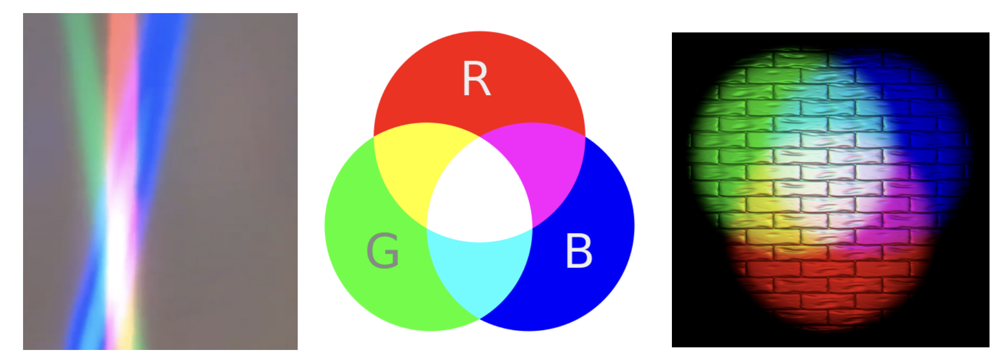
Fig. 14 Additive colors in light¶
Note
Additive colors
I know it doesn’t match human intuition. However, additive RGB colors in light combine to produce white light, while additive RGB in paints result in light gray paint. This makes sense because light has no shade. This result stems from the way human eyes perceive color. Without light, no color can be sensed by the eyes.
Computer engineers should understand that exploring the underlying reasons falls into the realms of physics or the biology of the human eye structure.
Transformation¶
Overview
The tranformation matrices have been taught in high school and college. However this mathematical details are not always retained clearly in memory. The following section reviews the parts relevant to graphics rendering.
In both 2D and 3D graphics, every object transformation is performed by multiplying the object’s vertex coordinates by one or more transformation matrices. Modern OpenGL uses homogeneous coordinates and 4×4 matrices to unify translation, rotation, scaling, projection, and even animation (skinning) into a single mathematical framework.
A vertex in 3D is represented as:
A transformation is applied by matrix multiplication:
Multiple transformations are combined by multiplying matrices:
Where:
M= Model matrix (object → world)V= View matrix (world → camera)P= Projection matrix (camera → clip space)
This is the core of the OpenGL rendering pipeline, as shown in Fig. 15.
{kind=link}
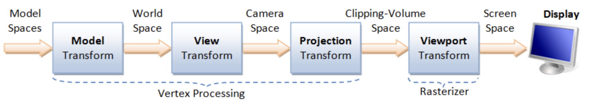
Model space: The is the vertices position mentioned under Root bone in Animation flow. All vertex coordinates are calcuated relative to the root bone.
Model Rranform:
M= Model matrix (object → world). This represents the vertex positions mentioned under Transform Animation in Animation flow.
Details for Fig. 15 can be found on “4. Vertex Processing” of the website [4].
Transformation Matrices [5]
Translation: Moves an object in 3D space.
\(T(x,y,z)=\begin{bmatrix}1&0&0&x\\0&1&0&y\\0&0&1&z\\0&0&0&1\end{bmatrix} \begin{bmatrix}X\\Y\\Z\\1\end{bmatrix} = \begin{bmatrix}X+x\\Y+y\\Z+z\\1\end{bmatrix}\)
Scaling: Resizes an object.
\(S(s_x,s_y,s_z)=\begin{bmatrix}s_x&0&0&0\\0&s_y&0&0\\0&0&s_z&0\\0&0&0&1\end{bmatrix} \begin{bmatrix}X\\Y\\Z\\1\end{bmatrix} = \begin{bmatrix}s_x X\\s_y Y\\s_z Z\\1\end{bmatrix}\)
Rotation X: Rotates around the X-axis.
\(R_x(\theta)=\begin{bmatrix}1&0&0&0\\0&\cos\theta&-\sin\theta&0\\0&\sin\theta&\cos\theta&0\\0&0&0&1\end{bmatrix} \begin{bmatrix}X\\Y\\Z\\1\end{bmatrix} = \begin{bmatrix}X\\Y\cos\theta - Z\sin\theta\\Y\sin\theta + Z\cos\theta\\1\end{bmatrix}\)
Rotation Y: Rotates around the Y-axis.
\(R_y(\theta)=\begin{bmatrix}\cos\theta&0&\sin\theta&0\\0&1&0&0\\-\sin\theta&0&\cos\theta&0\\0&0&0&1\end{bmatrix} \begin{bmatrix}X\\Y\\Z\\1\end{bmatrix} = \begin{bmatrix}X\cos\theta + Z\sin\theta\\Y\\-X\sin\theta + Z\cos\theta\\1\end{bmatrix}\)
Rotation Z: Rotates around the Z-axis.
\(R_z(\theta)=\begin{bmatrix}\cos\theta&-\sin\theta&0&0\\\sin\theta&\cos\theta&0&0\\0&0&1&0\\0&0&0&1\end{bmatrix} \begin{bmatrix}X\\Y\\Z\\1\end{bmatrix} = \begin{bmatrix}X\cos\theta - Y\sin\theta\\X\sin\theta + Y\cos\theta\\Z\\1\end{bmatrix}\)
Shear in X: - Skews geometry along axis X.
\(\text{Shear}_X(a,b)= \begin{bmatrix}1&a&b&0\\0&1&0&0\\0&0&1&0\\0&0&0&1\end{bmatrix} \begin{bmatrix}X\\Y\\Z\\1\end{bmatrix} = \begin{bmatrix}X + aY + bZ\\Y\\Z\\1\end{bmatrix}\)
Shear in Y: Skews geometry along axis Y.
\(\text{Shear}_Y(c,d)= \begin{bmatrix}1&0&0&0\\c&1&d&0\\0&0&1&0\\0&0&0&1\end{bmatrix} \begin{bmatrix}X\\Y\\Z\\1\end{bmatrix} = \begin{bmatrix}X\\cX + Y + dZ\\Z\\1\end{bmatrix}\)
Shear in Z: Skews geometry along axis Z.
\(\text{Shear}_Z(e,f)= \begin{bmatrix}1&0&0&0\\0&1&0&0\\e&f&1&0\\0&0&0&1\end{bmatrix} \begin{bmatrix}X\\Y\\Z\\1\end{bmatrix} = \begin{bmatrix}X\\Y\\eX + fY + Z\\1\end{bmatrix}\)
Reflection: Mirrors across a plane.
\(\text{Reflect}_{XY},\ \text{Reflect}(\mathbf{n})\)
The “4.2 Model Transform (or Local Transform, or World Transform)” of on the website [4] provides conceptual coverage of transformations. List the websites that provide proofs of the non-obvious transformation formulas below.
Rotation
The mathematical proof is given below.
Prove the 2D formula and then intutively extend it to 3D along the X, Y, and Z axes [6].
Proof in greater details:
https://austinmorlan.com/posts/rotation_matrices/
Shear (Skew)
Shear is a skewing transformation as shown in Fig. 16.
{kind=link}
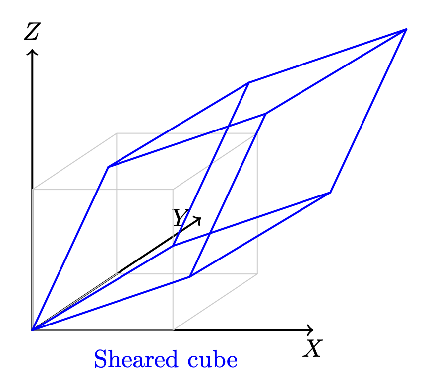
Fig. 16 3D shear¶
Shear in X: plane x = 0 (the YZ‑plane), slides points parallel to the X‑axis.
The mathematical proof is given below.
https://en.wikipedia.org/wiki/Shear_mapping
Reflection
Reflection is nothing but a mirror image of an object.
Reflection across the XY-plane:
Reflection across an arbitrary plane with unit normal \(\mathbf{n}\):
The mathematical proof is given below.
https://www.geeksforgeeks.org/computer-graphics/computer-graphics-reflection-transformation-in-3d/
The following Quaternion Product (Hamilton product) is from the wiki [7] since it is not covered in the book.
Cross Product¶
Todo:
Computing the direction of the line of intersection between two planes (via \(n_1 \mathsf x n_2\))
end-of-Todo
Both triangles and quads are polygons. So, objects can be formed with polygons in both 2D and 3D. The transformation in 2D or 3D is well covered in almost every computer graphics book. This section introduces the most important concept and method for determining inner and outer planes. Then, a point or object can be checked for visibility during 2D or 3D rendering.
Any area of a polygon can be calculated by dividing it into triangles or quads. The area of a triangle or quad can be calculated using the cross product in 3D.
✅ The role of cross product:
In 2D geometry mathematics, \(v_0, v_1 and v_2\) can form the area of a parallelogram as shown in Fig. 17. The fourth vertex, \(\mathbf{v}_3\), can then be determined to complete the parallelogram.
{kind=link}
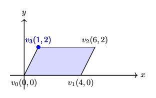
Fig. 17 The area determined by \(v_0, v_1, v_2\) in 2D¶
The area of the parallelogram is given by:
The area of a parallelogram is same in both 2D and 3D. To extend the definition of the corss product to 3D, all we must additionally consider the orientation of the plane, since a plane has two possible faces.
\(n\) is a unit vector perpendicular to the plane. \(\Rightarrow\) direction.
As shown in Fig. 18, the plane determined by \(v_0, v_1, v_2\) with CCW ordering defines a unique orientation.
The area of the parallelogram remains unchanged after rotation as shown in Fig. 19, which means the area and plane face determined by extending the definition of cross product from 2D to 3D correctly.
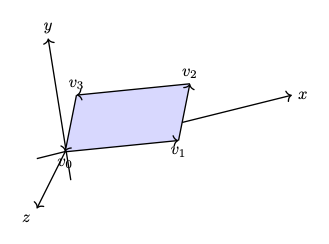 Fig. 18 The area and plane face determined by \(v_0, v_1, v_2\) with CCW ordering before rotation \(z\) axis.¶ |
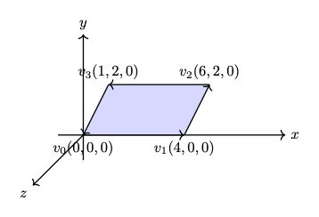 Fig. 19 The area and plane face determined by \(v_0, v_1, v_2\) with CCW ordering after rotation \(z\) axis.¶ |
{kind=link}
{kind=link}
The area of the triangle is obtained by dividing the parallelogram by 2:
✅ Matrix Notation for Cross Product:
The cross product in 2D is defined by a formula and can be represented with matrix notation, as proven here [10] [11].
The cross product in 2D is defined by a formula and can be represented with matrix notation, as proven here [10] [11].
After the above matrix form is proven, the antisymmetry property may be demonstrated as follows:
✅ Determine the area in a plane:
As described earlier of in this section, three vertices form a parallelogram or triangle and the area in the plane can be determined since the angle between \(v_1 - v_0\) and \(v_2 - v_1\) satisfied \(0 < \Theta < 180^\circ\) under CCW orientation. In fact one single vector :math:`v_1 - v_0` is sufficient to determine the area. We describle this below.
In 2D, any two points \(\text{from } P_i \text{ to } P_{i+1}\) can form a vector and determine the inner or outer side.
For example, as shown in Fig. 20, \(\Theta\) is the angle from \(P_iP_{i+1}\) to \(P_iP'_{i+1} = 180^\circ\).
Using the right-hand rule and counter-clockwise order, any vector \(P_iQ\) between \(P_iP_{i+1}\) and \(P_iP'_{i+1}\), with angle \(\theta\) such that \(0^\circ < \theta < 180^\circ\), indicates the inward direction.
{kind=link}
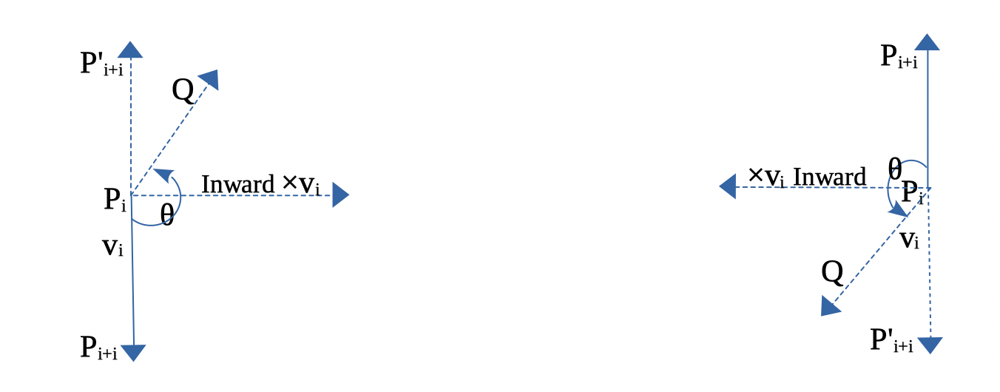
Fig. 20 Inward edge normals¶
{kind=link}
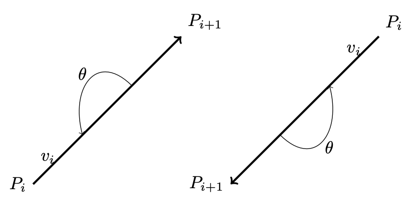
Fig. 21 Inward and outward in 2D for a vector.¶
Based on this observation, the rule for inward and outward vectors is shown in Fig. 20. Facing the same direction as a specific vector, the left side is inward and the right side is outward, as shown in Fig. 21.
For each edge \(P_i - P_{i+1}\), the inward edge normal is the vector \(\mathsf{x} \; v_i\); the outward edge normal is \(- \; \mathsf{x} \; v_i\), where \(\mathsf{x} \; v_i\) is the cross-product of \(v_i\), as shown in Fig. 20.
A polygon can be created from a set of vertices. Suppose \((P_0, P_1, ..., P_n)\) defines a polygon. The line segments \(P_0P_1, P_1P_2\), etc., are the polygon’s edges. The vectors \(v_0 = P_1 - P_0, v_1 = P_2 - P_1, ..., v_n = P_0 - P_n\) represent those edges.
Using counter-clockwise ordering, the left side is considered inward. Thus, the inward region of a polygon can be determined, as shown in Fig. 22 and Fig. 23.
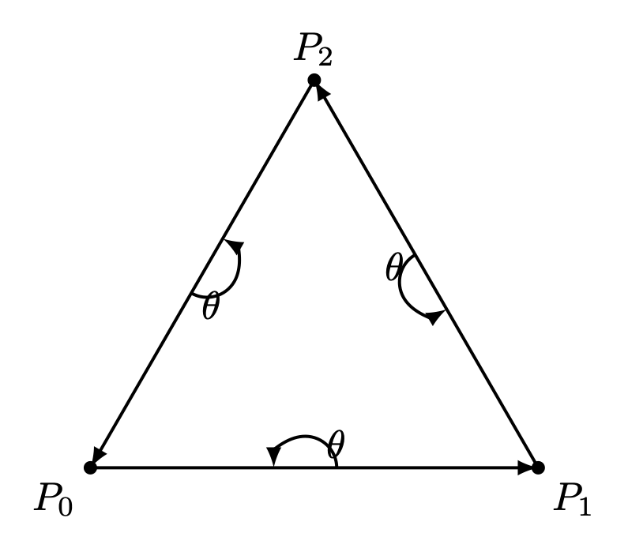 Fig. 22 Triangle with CCW¶ |
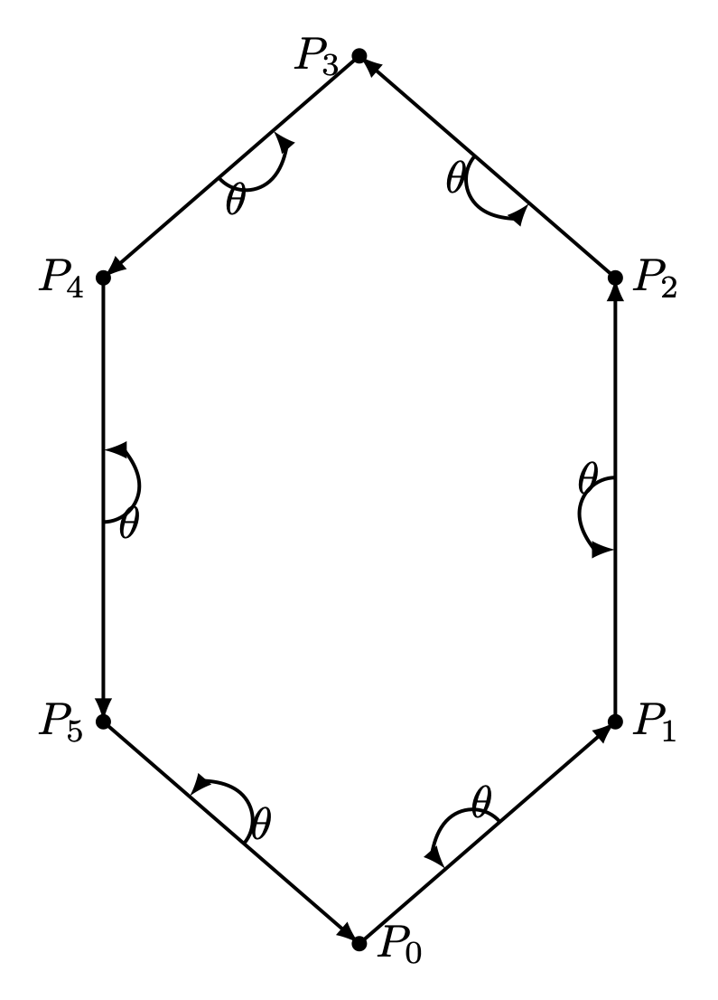 Fig. 23 Hexagon with CCW¶ |
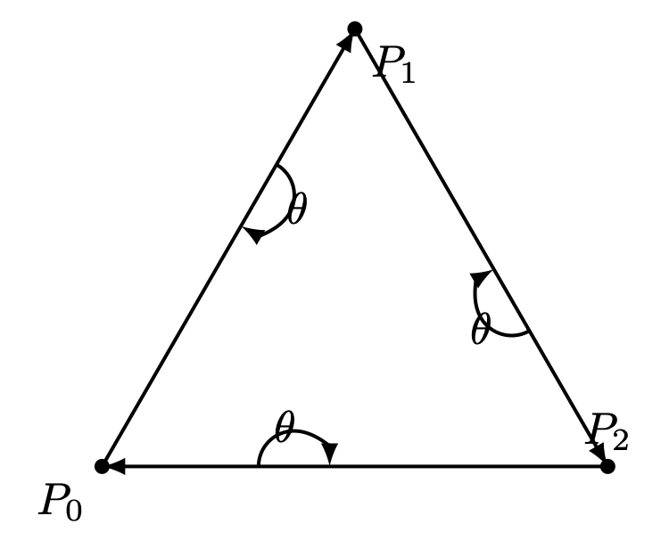 Fig. 24 Triangle with CW¶ |
{kind=link}
{kind=link}
{kind=link}
For a convex polygon with vertices listed in counter-clockwise order, the inward edge normals point toward the interior of the polygon, and the outward edge normals point toward the unbounded exterior. This matches our usual intuition.
However, if the polygon vertices are listed in clockwise (CW) order, the interior and exterior definitions are reversed. Fig. 24 shows an example where \(P_0, P_1, P_2\) are arranged in CW order.
This cross product has an important property: going from \(v\) to \(\times v\) involves a 90° rotation in the same direction as the rotation from the positive x-axis to the positive y-axis.
{kind=link}
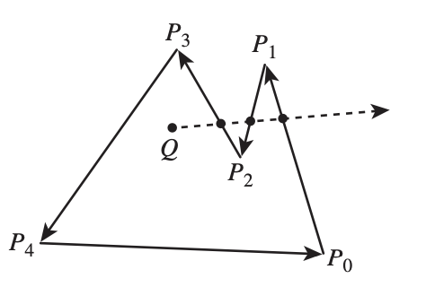
Fig. 25 Draw a polygon with vectices counter clockwise¶
As shown in Fig. 25, when drawing a polygon with vectors (lines) in counter-clockwise order, the polygon will be formed, and the two sides of each vector (line) can be identified [12].
Furthermore, whether a point is inside or outside the polygon can be determined.
One simple method to test whether a point lies inside or outside a simple polygon is to cast a ray from the point in any fixed direction and count how many times it intersects the edges of the polygon.
If the point is outside the polygon, the ray will intersect its edges an even number of times. If the point is inside the polygon, it will intersect the edges an odd number of times [13].
{kind=link}
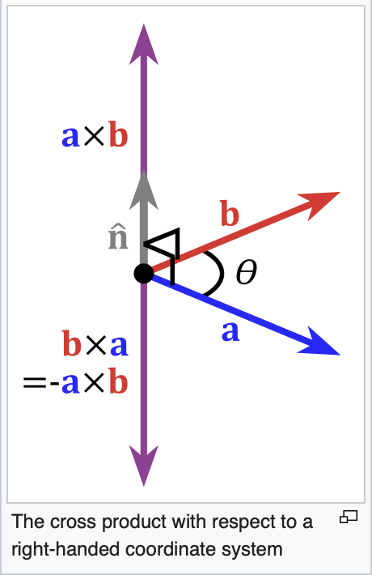
Fig. 26 Cross product definition in 3D¶
In the same way, by following the counter-clockwise direction to create a 2D polygon step by step, a 3D polygon can be constructed.
As shown in Fig. 26 from the wiki [9], the inward direction is determined by \(a \times b < 0\), and the outward direction is determined by \(a \times b > 0\) in OpenGL.
Replacing \(a\) and \(b\) with \(x\) and \(y\), as shown in Fig. 27, the positive Z-axis (\(z+\)) represents the outer surface, while the negative Z-axis (\(z-\)) represents the inner surface [14].
{kind=link}
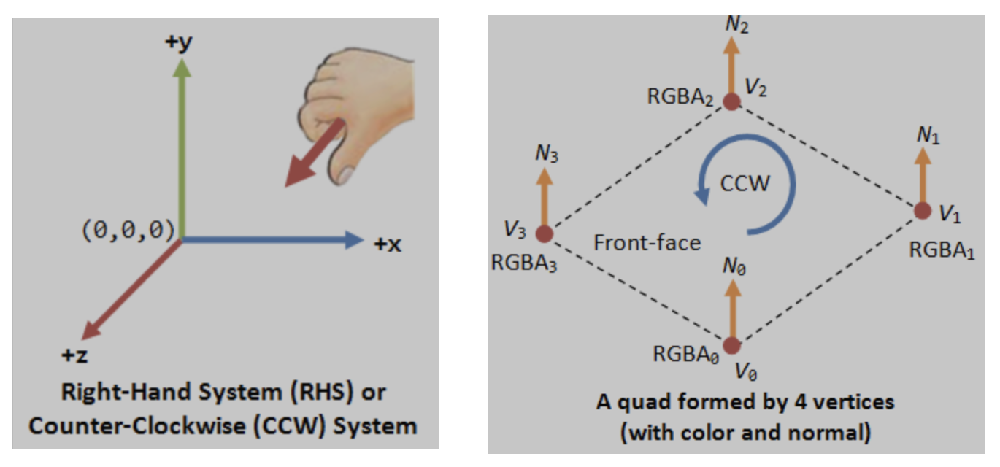
Fig. 27 OpenGL pointing outwards, indicating the outer surface (z axis is +)¶
{kind=link}
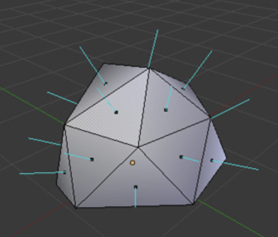
Fig. 28 3D polygon with directions on each plane¶
Reposition each triangle in front of camera and construct it using triangle with CCW ordering, as shown in Fig. 22. By building every triangle with CCW ordering, we can defined a consistent outer surface (front face). The Fig. 28 shows an example of a 3D polygon created from 2D triangles. The direction of the plane (triangle) is given by the line perpendicular to the plane.
Cast a ray from the 3D point along the X-axis and count how many intersections with the outer object occur. Depending on the number of intersections along each axis (even or odd), you can understan if the point (or the camara) is i nside or outside [15].
An odd number means inside, and an even number means outside. As shown in Fig. 29, points on the line passing through the object satisfy this rule.
{kind=link}
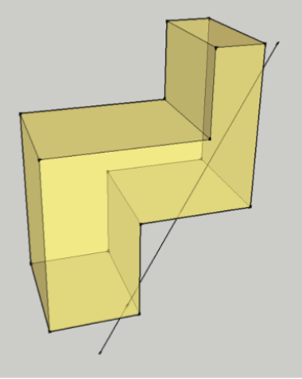
Fig. 29 Point is inside or outside of 3D object¶
✅ Summary:
Based on these description of this section, this means:
✔️ Each mesh (triangle or primitive) has a fixed “outer” and “inner” side, determined by CCW ordering in object space.
✔️ By reading these CCW-ordered vertices sequentially, the shape and surface orientation of the 3D model can be constructed.
✔️ There is no need to wait for the entire mesh to be received; once three CCW-ordered vertices are available, each triangle can be processed correctly as shown in Fig. 30 from the camera position \(p_0\).
{kind=link}
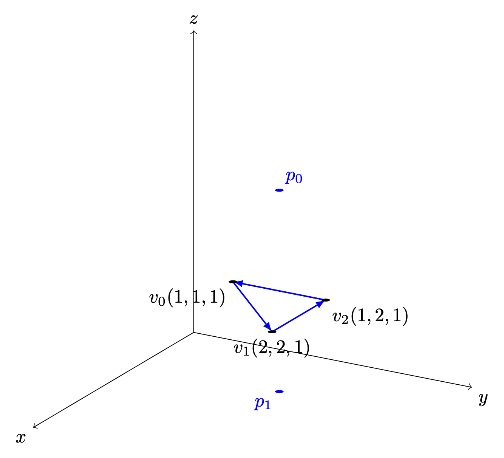
Fig. 30 A triangle can be constructed as soon as three vertices are received¶
✔️ When the camera moves to the \(p_1\) inside an object: CCW ↔ CW flips as shown in Fig. 30.
✔️ As shown in Trangle Area Calculation when \(0 < \Theta < 180^\circ\) under CCW orientation, the area of a triangle area is given by:
✔️ Though each triangle can be correctly identified and processed using its CCW ordering. As mentioned in Fig. 15 of section Transformation, the Cooridinates Transform Pipeline maps geometry from Camera Space to Clipping Space (Clipping Volume). This tranformation significantly simplifies the calculation required for discarding and clipping triangles, as will be desribed in the next section Projection.
How does OpenGL render (draw) the inner face of a triangle?
OpenGL does NOT determine front/back in world space.
When the camera moves to the inner space of a object:
The projection changes
The triangle’s screen‑space orientation changes
CCW ↔ CW flips
So the GPU flips front/back classification
OpenGL uses counter clockwise and pointing outwards as default
// unit cube
// A cube has 6 sides and each side has 4 vertices, therefore, the total number
// of vertices is 24 (6 sides * 4 verts), and 72 floats in the vertex array
// since each vertex has 3 components (x,y,z) (= 24 * 3)
// v6----- v5
// /| /|
// v1------v0|
// | | | |
// | v7----|-v4
// |/ |/
// v2------v3
// vertex position array
GLfloat vertices[] = {
.5f, .5f, .5f, -.5f, .5f, .5f, -.5f,-.5f, .5f, .5f,-.5f, .5f, // v0,v1,v2,v3 (front)
.5f, .5f, .5f, .5f,-.5f, .5f, .5f,-.5f,-.5f, .5f, .5f,-.5f, // v0,v3,v4,v5 (right)
.5f, .5f, .5f, .5f, .5f,-.5f, -.5f, .5f,-.5f, -.5f, .5f, .5f, // v0,v5,v6,v1 (top)
-.5f, .5f, .5f, -.5f, .5f,-.5f, -.5f,-.5f,-.5f, -.5f,-.5f, .5f, // v1,v6,v7,v2 (left)
-.5f,-.5f,-.5f, .5f,-.5f,-.5f, .5f,-.5f, .5f, -.5f,-.5f, .5f, // v7,v4,v3,v2 (bottom)
.5f,-.5f,-.5f, -.5f,-.5f,-.5f, -.5f, .5f,-.5f, .5f, .5f,-.5f // v4,v7,v6,v5 (back)
};
From the code above, we can see that OpenGL uses counter-clockwise [16] and
pointing outwards as the default. However, OpenGL provides
glFrontFace(GL_CW) for clockwise winding [17].
For a group of objects, a scene graph provides better animation support and saves memory [18].
Dot Product¶
Dot Product
Ray–plane (line–plane) intersection
Determining angles between vectors
Lighting (Lambertian shading)
Solving for a point on the intersection line of two planes (because plane equations use dot products)
Described in wiki here:
https://en.wikipedia.org/wiki/Dot_product
✅ As described in the previous section Cross Product, the cross-product is:
\(n\) is a unit vector perpendicular to the plane \(\Rightarrow\) direction.
The dot product definition is:
✅ Since \(n\) is the outward normal vector for a CCW-ordered triangle, we have:
\((\mathbf p - v_0) \mathsf \cdot \mathbf n > 0 \Rightarrow \mathbf p\) lies on the front (outer) side of the plane.
\((\mathbf p - v_0) \mathsf \cdot \mathbf n = 0 \Rightarrow \mathbf p\) lies on the plane.
\((\mathbf p - v_0) \mathsf \cdot \mathbf n < 0 \Rightarrow \mathbf p\) lies on the back (inner) side of the plane.
✅ A plane is represented by:
where:
\(n\) is the plane’s normal vector
\(x_0, x_1\) are any points on the plane
Let’s define the scalar constant \(d\) by:
Thus, the set of all points \(\mathbf{p}\) satisfying
✅ Ray–plane (line–plane) intersection
For an edge between vertices \(\mathbf{p}_0\) and \(\mathbf{p}_1\), parameterized as:
the intersection with a clipping plane is found by solving:
This yields:
Projection¶
{kind=link}
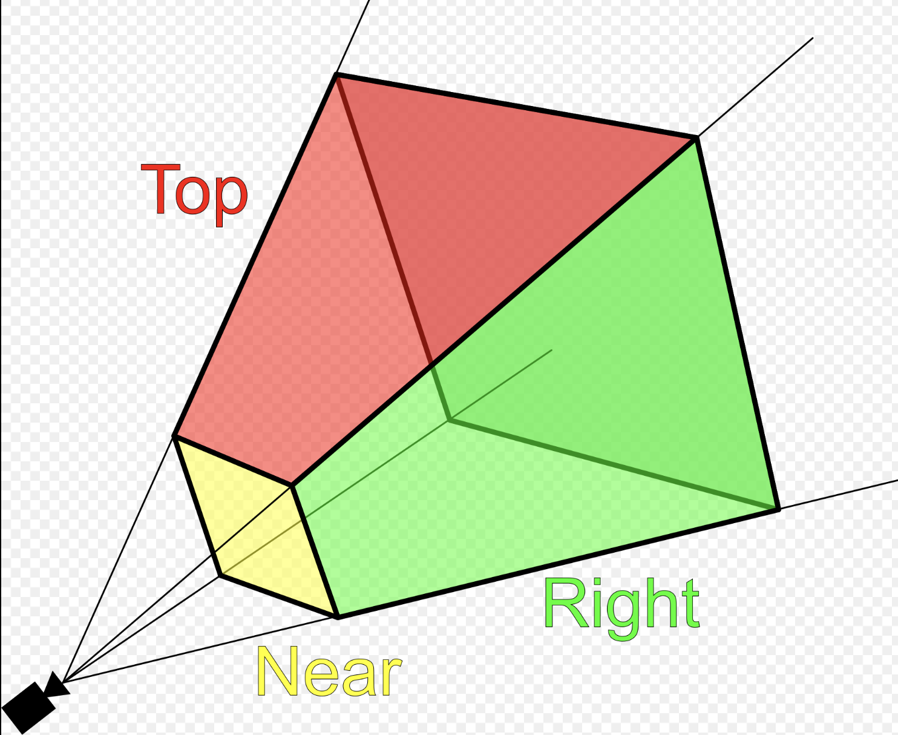
Fig. 31 Clipping-Volume Cuboid¶
Only objects within the cone between near and far planes are projected to 2D in perspective projection.
Perspective and orthographic projections (used in CAD tools) from 3D to 2D can be represented by transformation matrices as described in wiki here [8].
The “4.4 Projection Transform - Perspective Projection” of on the website [4] provides conceptual coverage of projections.
Camera Space Setup
Assume a right-handed camera coordinate system as shown in Fig. 31:
The camera is located at the origin.
The camera looks down the negative \(z\) axis.
The near plane is located at \(z = -n\).
The far plane is located at \(z = -f\).
The view frustum bounds on the near plane are:
left: \(l\)
right: \(r\)
bottom: \(b\)
top: \(t\)
A point in camera space is represented as:
The position on the near plane is:
✅ Reason:
As described in the previous section Cross Product, each mesh (triangle or primitive) has a fixed “outer” and “inner” side, determined by CCW ordering in object space. By reading these CCW-ordered vertices sequentially, the shape and surface orientation of the 3D model can be constructed, and hidden primitives can be clipped or discarded.
However primitive clipping and discarding can be performed much more efficiently by mapping the view frustum to clip space, where the GPU can easily clip or discard primitives, as shown Fig. 32 from the earlier section Transformation again for clarity. Performing clipping and discarding in world space would be significantly more difficult.
✅ Matrix \(P_{\text{persp}}\) converts 3D coordinates into clip space:
Perspective projection \(P_{\text{persp}}\) (general form): Converts 3D → clip space with depth
by a homogeneous point
Converting from camera space to cliping space produces a homogeneous coordinate of the form \([x, y, z, w_c]\):
After transforming to ciip space, each vertex corrodinate is expressed in homogeneous form, and the view frustum boundaries are encoded in the coordinate values. A vertex lies inside the view frustum if the following conditions are satisfied:
✅ Where does the matrix \(P_{\text{persp}}\) from:
The perspective projection matrix \(P_{\text{persp}}\) is derived by choosing its coefficients such that, after perspective division, the frustum boundaries \(l,r,b,t,n and f\) are mapped to the canonical cube \(\mathbf{[-1,1]^3}\).
The mathematical proof is provided in Proof for Perspective Projection.
✅ Map points to NDC:
After applying matrix \(P_{\text{persp}}\), any vertex in view space is mapped to clip space:
For the standard perspective matrix:
The normalized device coordinates (NDC) are obtained by perspective division:
Substituting the matrix coefficients:
This matrix maps the view frustum in camera space to the normalized cube in NDC after homogeneous division.
For all vertices that survived clipping, the resulting coordinates satisfy:
Therefore, the visible region lies inside the canonical cube:
✅ Comparsion for clipping and discarding in World Space and Clipping Space
When a triangle intersects the view frustum, it must be clipped so that only the portion inside the frustum is rasterized. Although the clipping procedure is conceptually similar in world space and clip space, the mathematical complexity differs significantly. Clipping and discarding in clip space will saves 85% in instructions.
1A. Discarding in world space:
As described in the section Dot Product:
The definition of Dot Product is:
When \((\mathbf p - v_0) \mathsf \cdot \mathbf n < 0 \Rightarrow \mathbf p\) lies on the back (inner) side of the plane.
For the ray–plane (line–plane) intersection, the \(d_i\) can be obtained by choosing any point \(\mathbf{p}_0\) on the plane with normal vector \(\mathbf{n}_i\).
In world (or view) space, the view frustum is bounded by six arbitrary planes, each defined by a normal vector \(\mathbf{n}\) and distance \(d\).
For each vertex \(\mathbf{p}\), discarding requires testing against all planes:
Cost per vertex
6 dot products (each ≈ 3 multiplications + 2 additions)
6 additions with plane constants
6 comparisons
Approximate arithmetic cost:
18 multiplications
18 additions
6 comparisons
1B. Discarding in clip space:
In clip space, vertices are represented in homogeneous coordinates \((x_c, y_c, z_c, w_c)\). The view frustum becomes an axis-aligned volume defined by:
Approximate arithmetic cost:
6 comparisons
Overall arithmetic instruction reduction 85% ~ 95%.
2A. Clipping in World Space:
Edge–plane intersection
As described in the section Dot Product, the ray–plane (line–plane) intersection can be derived as follows:
Each frustum plane requires a separate equation and dot-product evaluation.
Triangle reconstruction
After computing all intersection points:
New vertices are inserted along intersecting edges
The original triangle is split into one or more triangles
Perspective projection is applied afterward
Care must be taken to preserve perspective correctness during interpolation.
2B. Clipping in Clip Space:
Edge–plane intersection
Edges are interpolated linearly in homogeneous space:
Intersection with a clipping boundary is found by solving equations such as:
Each case reduces to a single scalar equation for \(t\).
Compare \(t = \frac{x_0 - w_0}{(x_0 - w_0) - (x_1 - w_1)}\) and the equation from world space \(t = \frac{- (\mathbf{n} \cdot \mathbf{p}_0 + d)}{\mathbf{n} \cdot (\mathbf{p}_1 - \mathbf{p}_0)}\), it saves 85% for reducing two dot operations and more opertions.
Triangle reconstruction
After clipping:
New vertices remain in homogeneous coordinates
Perspective division is deferred
Linear interpolation remains perspective-correct
The final step applies the perspective divide:
4.3 Comparison and Practical Implications
World-space clipping and discarding uses general plane equations and complex geometry.
Clip-space clipping and discarding uses axis-aligned bounds and simple interpolation.
Perspective correctness is naturally preserved in clip space.
GPU hardware can implement clip-space clipping and discarding efficiently.
For these reasons, modern graphics pipelines perform triangle clipping and discarding in clip space, not in world space.
✅ Perspective Projection Matrix Derivation
This section derives the perspective projection matrix by mapping a view frustum in camera space to Normalized Device Coordinates (NDC).
A vertex is kept only if it satisfies the following inequalities:
These inequalities define the view frustum in homogeneous coordinates.
If a vertex violates any of these conditions, it lies outside the view frustum (left, right, top, bottom, near, or far plane) and is clipped or discarded.
The goal is to map this frustum to Normalized Device Coordinates (NDC):
★ Idea:
The idea of deriving the perspective projection matrix \(P_{\text{persp}}\) is to choose its coefficients such that, after perspective division, the frustum boundaries are mapped to the canonical cube \([-1,1]^3\).
More explicitly, we impose the following constraints:
These conditions determine the coefficients of the matrix.
Homogeneous Perspective Divide
After projection, homogeneous division is applied:
To achieve perspective foreshortening, the homogeneous coordinate must satisfy:
This requirement determines the last row of the projection matrix.
X Coordinate Mapping
Since the near plane is located at \(z = -n\), by similar triangles, the projected x-coordinate on the near plane is:
The near-plane bounds map to NDC as follows:
Assume a linear mapping:
Applying the near constraints: substituting \(x_n = l\ and\ x_{ndc} = -1\):
Applying the far constraints: substituting \(x_n = r\ and\ x_{ndc} = 1\):
Solving equations (1) and (2) to get \(A_x\):
Substituting equation (3) to (2):
From (3) and (4): Solving for \(A_x\) and \(B_x\) yields:
Substituting \(x_n\) gives the resulting mapping is:
Y Coordinate Mapping:
Using the same derivation for the y-axis:
The resulting mapping is:
Z Coordinate Mapping
Depth is mapped linearly such that:
Assume:
Then:
Applying the near constraints: substituting \(z = -n\ and\ z_{ndc} = -1\):
Applying the far constraints: substituting \(z = -f\ and\ z_{ndc} = 1\):
Solving equations (1) and (2) to get \(A_z\):
Substituting equation (3) to (2):
From (3) and (4):
Perspective Projection Matrix
Combining all components, the perspective projection matrix is:
Reference:
1. Every computer graphics book covers the topic of transformation of objects and their positions in space. Chapter 4 of the Blue Book: OpenGL SuperBible, 7th Edition provides a concise yet useful 40-page overview of transformation concepts and is good material for gaining a deeper understanding of transformations. description of transformation.
Chapter 7 of Red book covers the tranformations and projections.